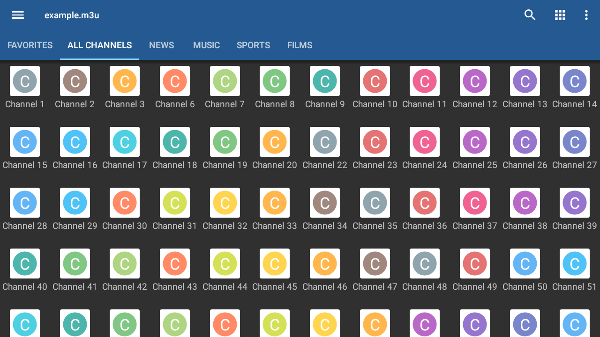

用了三年 IPTV 播放器才发现的五个隐藏开关，每一个都在关键时刻救过场
从黑屏花屏的解码切换到盒子上绕过遥控器输链接的文件导入，五个藏得很深的小技巧，把 IPTV 播放器从"能用"推到"好用"。
你以为iptv官网上这款播放器就是导入个 M3U 列表、点台标看直播？我之前也是这么想的——直到去年帮家里老人从iptv下载下了安装包装进电视盒子，才被逼着一个个翻设置，翻出好几个"原来还能这样"的隐藏开关。
这些功能藏得不深，但iptv文档也没在首页大声喊出来，属于那种用不到时永远不会主动点进设置翻的类型。下面五个是我觉得最值的，按"救急程度"排序。
第一个：黑屏有声音时，播放中点屏幕就能切解码
这是我第一个真正用起来的隐藏功能。有天晚上换了份新的直播列表，点进去全是黑屏——有声音没画面，遥控器按来按去没反应，差点把盒子重启了。
后来才知道：播放中的控制层里藏着一个解码切换项。手机上是点屏幕呼出，遥控器按 OK 键也能出来。里面就两个选项：硬件解码和软件解码。硬解是默认的，省电流畅，但对非标准编码的流特别敏感，一碰到就黑屏花屏。软解则是 CPU 兜底，什么怪流都能啃下来，代价是发热耗电。
那天切到软解，画面立刻出来了。判断逻辑也简单：切软解好了 = 这条流的编码不规范，以后用软解看；还是黑屏 = 问题不在解码层，该查流本身或网络了。
藏得真深——我用了快两年才发现这个开关，之前黑屏要么换列表要么重启应用。如果你经常试新列表，这个解码切换是必须知道的。
第二个：盒子上输 M3U 链接太折磨？用文件导入绕开
遥控器逐字输入 300 字符的 M3U 链接，是谁设计出来的反人类操作？输到第 200 位按错一个方向键，全盘重来——我给家里老人配置盒子时差点把遥控器砸了。
后来才发现应用支持本地文件导入，这条路彻底没有输入环节：手机或电脑上拿到 m3u 文件，拷进 U 盘插到盒子，在文件管理器里确认位置，应用里走文件导入选中它就行。整个过程连遥控器软键盘都不用碰一下。
这条路径也是给长辈配置盒子的首选。我现在每次更新列表都在电脑上改好，U 盘拷进去替换旧文件，比输链接快十倍。
还有个更省心的路子：部分盒子支持从手机端完成应用配置，或者通过局域网共享、聊天工具把文件送到盒子存储里——本质都是"在手机上做好，再挪过去"，不让遥控器承担任何输入工作。
第三个：开机自启 + 自动播放最后频道，盒子直接变成有线机顶盒
Pro 版的这两个开关我之前单独看都没觉得怎么样——不就是自动启动应用吗？直到我把它们叠在一起打开：盒子通电，应用自启，直接接续上次看的频道，整个过程遥控器一次都不用按。
给老人用的客厅盒子，这一项几乎就是 Pro 版的全部购买理由。之前家里的盒子重启后永远停在桌面，老人得找图标、点进去、等加载、再找上次看的台——四步操作，每一步都可能卡壳。
现在呢？早上醒过来，电视一开就是昨天看的央视一套。这种体验上的质变，免费版给不了。

第四个：电视盒子上的视图选择，不是越密越好
手机上用列表视图没问题，台标挤一挤一屏能多显示几个台。但搬到客厅大屏，我发现平铺或网格视图才是正确打开方式——频道格子大、间距足，三米外台标辨识度高，遥控器焦点移动时的误按率也低。
反过来，列表视图在电视上远距离读小字特别费劲，台标如果是字母圆标列表，基本就是一团模糊。一份台标齐全的列表，在网格视图下的体验能甩开列表视图好几条街。
这个选项藏在频道浏览的设置里，默认可能跟着手机端的习惯走。装进盒子后第一件事，切视图。
第五个：软解可以兜底，但别长期开
发现解码切换之后，我有段时间干脆把全局解码偏好设成软解——省心，什么流都能看。结果一个月下来，手机发热明显多了，盒子的 CPU 也开始带不动 1080p 的高码率频道，卡顿掉帧时不时冒出来。
后来改回默认硬解，只在碰到那条特定的怪流时临时切软解。判断逻辑没变：先让硬解扛，不行了再软解兜底——软解是救急用的，不是常态。
什么人用得上这些隐藏开关
如果你只是偶尔在手机上看看直播，导入列表就完事儿了，上面五个里第二、第三、第四个对你帮助不大。但如果是盒子常驻客厅、经常试新列表、或者要给家人配置设备——这几个小技巧能让你少走不少弯路。
我现在的状态是：手机上保持默认设置不动，盒子上则把所有能省遥控器操作的都打开了。解码切换放在心里应急，文件导入是列表更新的固定流程，开机自启三件套（自启应用 + 自动接续频道 + 网格视图）是给老人配置盒子的标准操作。
把它用透，而不只是用来导个列表看个台。
这套 IPTV 播放器的资料我同步维护在三个代码仓库里，方便不同网络环境的人取用：GitHub、Gitee 和 GitCode 都能找到对应的文档目录，随时能查。